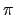

O pré-processador é um programa que faz alguns processamentos simples antes do compilador. Ele é executado automaticamente todas as vezes que seu programa é compilado, e os comandos a serem executados são dados através de diretivas do pré-processador.
Estas diretivas são colocadas em linhas que contém somente a diretiva
(elas não são código da linguagem C, portanto as regras para elas são
um pouco diferentes). As linhas que começam com um # são
comandos para o pré-processador. A linha inteira é reservada para este
comando (nenhum código C pode aparecer nesta linha e comandos do
pré-processador não podem estar separados em diversas linhas).
Uma diretiva que é usada frequentemente é o #define. Esta
diretiva é usada para fazer substituição de macros. Por
enquanto, mostraremos uma utilização simples do #define, que é
simplestemente uma substituição no texto.
O uso mais frequente desta diretiva é dar nomes simbólicos a uma
constante (você já viu outra maneira de definir contantes que é colocar
a palvavra const antes da definição de uma variável). Por
exemplo, seria conveniente usar PI em seus programas ao invés de
digitar 3.1415926535 toda hora. Como outro exemplo, se você
quiser escrever um programa sobre estudantes de uma turma de 81 alunos,
você poderia definir NUM_ALUNOS como 81. Assim, se o
número de alunos mudar, você não precisaria modificar todo o seu
programa onde o número de alunos (81) é utilizado, mas
simplesmente alterar a diretiva #define. Estas duas diretivas
são definidas da seguinte forma:
#define PI 3.1415926535
#define NUM_ALUNOS 81
Por convenção, nomes introduzidos por um #define são geralmente
em letra maiúscula (e variáveis são em letra minúscula, ou uma mistura
de letras minúsculas e maiúsculas). Assim, quando você vê um nome em
um programa, você sabe se o nome refere-se a uma variável ou um nome
definido por um #define.
Considere o seguinte programa exemplo que usa PI:
#define PI 3.14159265
main()
{
double raio;
printf("Entre com o raio: ");
scanf("%f", &raio);
printf("Circunferencia = %f\n", 2.0 * PI * raio);
}
Lembre-se que o nome PI não é um nome de variável. Ele é um nome
que o pré-processador substituirá pelo texto especificado pelo
#define (mais ou menos da mesma forma que o comando
pesquisa-e-substitui do editor de texto). O compilador nunca vê ou
sabe sobre PI. O compilador vê o seguinte printf() do
programa acima depois do pré-processador ser executado:
printf("Circunferencia = %f\n", 2.0 * 3.14159265 * raio);
Agora imagine que estamos escrevendo uma biblioteca geométrica: um
conjunto de funções para calcular a área de cilindros, cones, esferas.
Se diferentes pessoal estão escrevendo cada uma das funções, eles
provavelmente colocarão suas funções em diferentes arquivos. Mas todas
as funções usam o numero , e algumas outras constantes podem ser
necessárias também. Ao invés de colocar o #define no início de
cada arquivo, um único arquivo geom.h pode ser criado. Este
arquivo conterá a linha
#define PI 3.14159265
Assim, se todos os arquivos de funções geométricas puderem enxergar
geom.h, eles compartilharão as mesmas definições. é para isso
que usamos a diretiva #include, para incluir em seu programa,
informações que estão em outro arquivo. Estas diretivas geralmente
estão no início do programa fonte, antes da definição de funções e
varáveis. Por exemplo, a diretiva
#include "geom.h"
colocada nos arquivos fontes que contêm as funções geométricas fará com que todos eles usem o nome simbólico PI ao invés de 3.14159265. O fato do nome do arquivo estar em aspas significa que o arquivo geom.h está no mesmo diretório que os arquivos fontes (ao invés do diretório onde se encontram as bibliotecas padrão de C).
A diretiva
#include <stdio.h>
é colocada no início do programa fonte para incluir informações (como protótipos de funções) que são necessários quando printf() e scanf() são chamados dentro do programa. O arquivo entre < > está em algum diretório padrão conhecido pelo pré-processador. Este arquivo stdio.h é comum a todas as implementações da linguagem C e contém infomações necessárias para executar operações de entrada e saída da entrada e saída padrão (teclado e monitor).
A extensão .h vem do inglês header file. Apesar de não ser obrigatório que arquivos incluídos tenham a extensão .h, geralmente esta é a convenção utilizada.